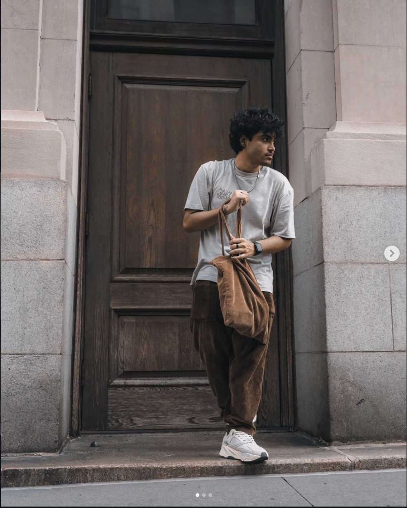

My name is Mahi Dizan and my Instagram is @fiftyshadesofmahi. I enjoy photography because it allows me to capture people, places, and moments from my own perspective. I really enjoy taking portraits of my friends and street/city photography.
